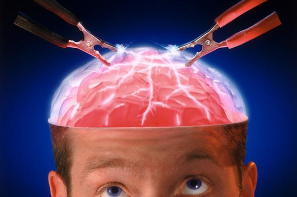

Немного о тайнах и загадках психики человека

По материалам книги Галины Железняк и Андрея Козки
" Тайны человеческой психики. "
А также из других источников Интернет
Уважаемый Читатель - после ознакомления с Книгой
рекомендую Вам заказать ее бумажное издание.
Человек есть тайна. Ее надо разгадать, и ежели будешь ее разгадывать всю жизнь, то не говори, что потерял время…
Ф. М. Достоевский
Разница между мною и большинством людей заключается в том, что для меня эти «разделяющие стены» прозрачны.
К. Г. Юнг. Воспоминания, сны, размышления
Я уверен в одном: то, что нам разрешено видеть, осязать и осмысливать, — это лишь капелька в море жизни. Если бы мир был настолько же примитивен, насколько он нам показан, то этот мир не смог бы существовать.
Николай Варсегов. Очарованный странник
- ВВЕДЕНИЕ.
- ЗАГАДОЧНЫЕ СПОСОБНОСТИ ЧЕЛОВЕКА.
- Телепатия.
- Магнетическая природа симпатии и антипатии.
- Озарение Месмера.
- Через тернии непонимания.
- Исследования психологических феноменов.
- В поисках источника.
- Признание наукой гипнотических состояний.
- Влияние защитного экрана в гипнозе.
- Электромагнитная гипотеза телепатии.
- Мозг - регулятор взаимодействий между человеком и вселенной.
- Другие гипотезы о природе телепатии.
- Что такое парапсихология.
- Что такое гипноз ?.
- Измененные состояния сознания ( ИСС ).
- Методы достижения ИСС.
- Тело человека — индикатор состояния сознания.
- ИСС и религиозная космогония.
- Опасные переходы в ИСС.
- ОЧЕВИДНОЕ-НЕВЕРОЯТНОЕ.
- Феномен Ури - Геллера.
- Феномен левитации.
- Необычайные полеты по воздуху.
- Феномен «Кожного зрения».
- Без помощи глаз.
- Феномен выхода из тела.
- Исход души.
- Лунатизм.
- Почему сон бывает вещим ?.
- Экстазы шаманов.
- Тайна казаков-характерников.
- МИСТЕРИЯ БОЖЕСТВЕННОГО СВЕТА.
- Духовное прозрение и мистический опыт.
- От смерти к бессмертию.
- На пути к духовному свету.
- В поисках Золотого цветка.
- Свет и сияние в христианстве.
- История доктора Р.-М. Бьюка.
- Опыт люминофании У.-Л. Уильямхерста.
- Из личного опыта математика Дж. X. Уайтмена.
- Автоматическое письмо.
- Использование маятника и планшеток в автоматическом письме.
- Эксперименты психолога Мортона Прайнса.
- Как испытать себя в автоматическом письме.
- Зеркальное письмо.
- НЕОРДИНАРНЫЕ ТАЛАНТЫ.
- Люди - магниты.
- Случаи проявления эффекта магнетизма-прилипания.
- Эффект прилипания и явление полтергейста.
- Электрические люди.
- Феномен Анжелики Котэн.
- Хождение по огню.
- Физика помогает понять феномен.
- ФИЗИЧЕСКИЕ РЕЗЕРВЫ ЧЕЛОВЕКА.
- Рекорды и достижения.
- Умение себя преодолеть.
- Испытание жарой и холодом.
- Если хочешь быть здоров — закаляйся.
- Дыхание и рекорды.
- Сила воли и выносливость.
- Вызов пределам выносливости.
- В ПОПЫТКАХ РАЗГАДАТЬ ТАЙНУ.
- Приложение.
- Необычные случаи.
- Источники информации.